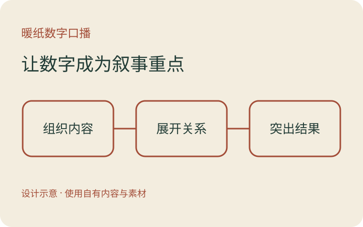

暖纸底色、砖红数字、绿色卡片与连续人物窗口。

提供口播或音频、同版本字幕、真实截图与配乐。通过 Skill 读取模板规范，组织分镜、重新绑定时间与素材，再保存到工作台预览和导出。
本页为通用能力说明与设计示意。发行包不含私人演示视频；不把参考研究或测试通过当作用户对新片的视觉验收。知识付费讲解部分旧图解仍需按新题材补齐参数，不是任意输入一键完成。
打开全片工作台 · 打开剪辑时间轴
规范位置：templates/warm-editorial/0.1.0/controls.json